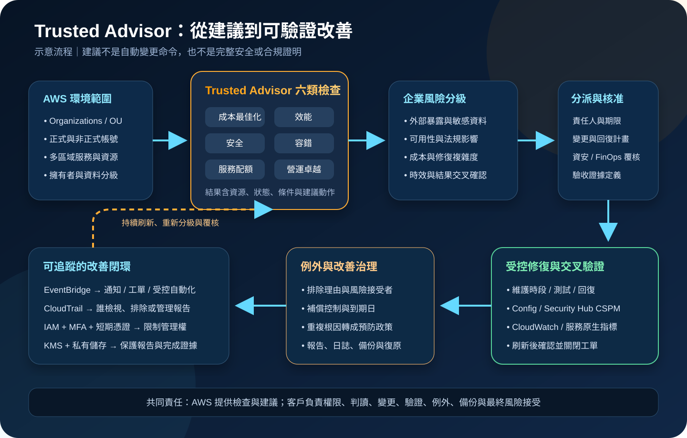

AWS Trusted Advisor：最佳實務檢查與改善治理
AWS Trusted Advisor 會檢查 AWS 環境，依成本最佳化、效能、安全、容錯、服務配額與營運卓越等類別提出建議。它適合用來發現可疑組態與改善機會，但不是即時威脅偵測、完整弱點掃描或自動變更工具；每項建議都必須先確認範圍、時效、業務例外與變更風險，再進入核准、修復與驗證流程。
作者：Dr. William｜查閱與發布：2026-11-11
服務定位
AWS Trusted Advisor 是集中檢視 AWS 最佳實務建議的服務。它將檢查結果整理為需要採取動作、需要調查、未偵測到問題與已排除項目，並提供受影響資源、判定條件、建議動作及相關文件。常見用途包括找出低使用率資源、公開或過度寬鬆的設定、配額逼近、單點風險與營運改善項目。
可用檢查與自動更新能力受 AWS Support 方案影響。Basic Support 可使用核心檢查；完整檢查、API、組織視圖或進階能力須依當下支援方案與功能文件確認。2026 年的支援方案名稱與權益正在調整，採購與架構文件不應沿用舊方案名稱或固定假設。
核心概念與服務邊界
六類檢查
- 成本最佳化：找出可能閒置、低使用率或可調整購買模式的資源。
- 效能：辨識可能限制回應速度、輸送量或資源效率的條件。
- 安全：檢查部分身分、公開存取與安全設定風險。
- 容錯：找出缺少冗餘、容量過度集中或可能影響復原的條件。
- 服務配額：辨識使用量接近或超過服務配額的情況。
- 營運卓越：提供有助於大規模穩定操作與治理的建議。
結果與治理
- 狀態不是風險等級：紅、黃、綠表示檢查判定，不等同企業自己的重大性分級。
- 排除項目：可從檢查結果排除已接受的資源，但必須保留理由、期限與覆核人。
- 組織視圖：可依支援方案與 Organizations 條件彙整多帳號結果並下載報告。
- 服務連結角色：Trusted Advisor 透過預先定義的 service-linked role 讀取必要資訊。
- 整合：EventBridge 可接收部分檢查更新事件；CloudTrail 可記錄支援的操作。
- 不直接證明合規：檢查通過不能取代 Security Hub CSPM、Config、Inspector、滲透測試與法規稽核。
適合與不適合的使用情境
適合
- 單一或多帳號環境需要定期盤點成本、效能、安全、容錯與配額改善機會。
- 雲端治理團隊需要把 AWS 建議轉成有責任人、期限、風險等級與完成證據的工作清單。
- 平台團隊需要跨帳號比較重複問題，找出應以 Organizations、SCP、Config 或基礎設施即程式碼處理的共同根因。
- 重大活動、流量高峰或上線前，需要檢查配額、冗餘與已知最佳實務缺口。
- 成本與資安團隊需要共享同一個改善入口，但仍維持各自的風險核准與驗證程序。
不適合或不能單獨完成
- 取代 Security Hub CSPM、GuardDuty、Inspector、Macie、WAF 日誌或 SIEM 的持續安全監控。
- 只看綠色狀態就宣稱沒有弱點、沒有外洩風險或已符合特定法規。
- 未經變更評估就自動刪除、縮小、停用或重新配置正式環境資源。
- 把潛在月省金額直接視為可實現節省，忽略預付承諾、尖峰需求、資料傳輸與授權成本。
- 作為唯一的災難復原、容量管理、成本分攤或資安例外管理系統。
示意故事案例：多帳號電商改善週期
以下為示意案例，不代表特定企業或正式部署。 一家電商公司使用多個 AWS 帳號承載正式站、資料分析、測試與共享服務。每月帳單增加，但團隊同時發現部分帳號接近服務配額、公開儲存設定需要調查，正式環境也存在跨可用區配置不足的疑慮。過去各團隊只在主控台看到結果後自行處理，沒有一致優先順序、例外期限或完成證據。
雲端治理團隊啟用 Trusted Advisor 的組織視圖，依帳號、OU、類別與狀態建立報告。結果先進入治理佇列，再以資料敏感度、外部暴露、營運衝擊、預估成本與修復複雜度重新分級。涉及公開存取與身分風險的項目優先交由資安團隊處理；配額與容錯項目進入上線前門禁；低使用率資源則由服務擁有者確認是否可關閉或縮小。
每次修復先在測試環境或維護時段驗證，完成後等待檢查刷新並用 CloudWatch、Config、Security Hub CSPM 或服務原生日誌交叉確認。確有業務需求的排除項目必須記錄擁有者、理由、補償控制與到期日，逾期自動回到待處理狀態。

建置與運作流程
- 確認支援方案：依最新 AWS Support 文件確認可用檢查、API、組織視圖、Trusted Advisor Priority 與更新頻率。
- 建立帳號範圍：盤點 Organizations、OU、正式與非正式帳號、區域、資源擁有者及資料分級。
- 使用企業身分：透過 IAM Identity Center 或聯合身分登入，要求 MFA 與短期憑證；禁止 root 日常操作與共用帳號。
- 縮限 IAM：將檢視、下載報告、管理組織視圖、排除資源與自動化動作分開授權。
- 檢視 service-linked role：確認 AWSServiceRoleForTrustedAdvisor 與報告角色的建立來源、信任關係與 AWS 管理政策更新。
- 建立基線：首次匯出結果，記錄檢查 ID、帳號、區域、資源、狀態、發現時間與刷新時間。
- 重新分級：依外部暴露、資料敏感度、可用性、法規、成本與業務依賴設定企業優先級。
- 指派責任：每項建議指定服務擁有者、資安或 FinOps 覆核人、期限與驗收證據。
- 確認結果時效：辨識手動刷新、自動刷新與整合來源的更新週期，避免以過期結果做變更決策。
- 建立變更計畫：先分析相依性、容量、停機、回復方法與成本，再透過正式變更流程執行。
- 交叉驗證：安全項目搭配 Config、Security Hub CSPM、Inspector、CloudTrail 或服務原生設定確認。
- 監控事件：使用 EventBridge 接收支援的 Trusted Advisor 事件，送往通知、工單或受控自動化。
- 保留稽核軌跡：使用組織層級 CloudTrail，記錄報告、排除、組織視圖與支援的主控台或 API 活動。
- 治理排除：要求理由、風險接受者、補償控制、到期日與定期覆核，禁止永久無主排除。
- 驗證改善：確認服務指標、可用性、安全控制與帳單變化，並在檢查刷新後關閉工單。
- 定期回顧：每月檢視趨勢、重複根因、逾期項目與新檢查，將常見問題轉成預防性政策或範本。
成本、可用性與維運考量
Trusted Advisor 的功能範圍與 AWS Support 方案直接相關。Basic Support 包含核心檢查；完整檢查與其他能力應以發布當日的方案比較頁確認。付費支援費通常依最低月費或 AWS 使用費比例計算，且方案可能按帳號或組織彙總計價。評估成本時不能只計算 Trusted Advisor 本身，還要包含 EventBridge、CloudTrail、S3、KMS、CloudWatch、Security Hub CSPM、Config、工單平台、資料分析及改善人力。
潛在節省只是依檢查模型估算的改善機會。正式決策還要評估尖峰容量、Reserved Instances 或 Savings Plans、資料傳輸、授權、維護窗口與服務等級。移除閒置資源前應先確認標籤、流量、備份、相依性與回復方法。
Trusted Advisor 是區域資源的跨服務檢查入口，但檢查更新不一定即時。部分結果需要手動刷新，部分會自動更新，整合型檢查可能要等待數小時。事件投遞也可能是 best effort，因此重大風險不能只依賴單一路徑；應以服務原生告警、Config、Security Hub CSPM、CloudWatch 與人工門禁補強。
組織報告建立時間會受帳號與資源數量影響，報告也有數量及同時建立限制。治理流程應保留最近成功報告、產生時間與資料範圍，並為 Organizations、身分提供者、KMS、日誌庫或工單系統故障準備替代操作。
AWS Trusted Advisor 特有資安風險與控制
- 把建議狀態當成完整安全結論：將 Trusted Advisor 視為一層檢查，搭配 Security Hub CSPM、Config、GuardDuty、Inspector、Macie 與人工測試。
- 結果時間落差：保存最後刷新時間，重大變更後以資源設定與服務原生 API 立即確認，不等待單一檢查狀態。
- 錯誤自動修復：EventBridge 只觸發受控流程；高影響變更須經核准、測試、回復與驗證，不直接執行刪除或縮容。
- 排除項目成為永久盲點：要求擁有者、理由、補償控制、到期日與複核，逾期自動建立工單。
- 報告含敏感資源資訊：組織報告與匯出檔存入私有 S3，啟用 Block Public Access、KMS、版本與生命週期。
- 跨帳號報告權限過大：Organizations 管理、產生報告、下載報告與唯讀檢視分離，使用最小權限角色。
- 管理帳號暴露：只在必要時使用 Organizations 管理帳號，採 MFA、短期憑證、受管工作站與緊縮 session。
- service-linked role 變更未監控：監控角色建立、刪除與 AWS 管理政策更新，確認沒有自訂信任或非預期授權。
- 公開存取問題延遲處理：涉及 S3、快照、Security Group 或其他外部暴露時，先以資源原生設定確認並依風險緊急處置。
- 身分風險：所有人員使用 IAM Identity Center 或聯合身分、MFA 與短期憑證；禁止長期 Access Key、共用帳號與 root 日常操作。
- 機密寫入自動化：工單、Lambda 或通知整合需要的機密存入 Secrets Manager／Parameter Store，不寫入程式碼、事件、標籤或日誌。
- 網路與資料出口未治理：主控台、API、報告下載與工單串接使用企業受管網路、TLS、出口監控及資料外傳政策。
- 事件遺失：EventBridge 的部分 Trusted Advisor 事件為 best effort，重大控制另以 CloudWatch、Config、Security Hub CSPM 或排程盤點補強。
- CloudTrail 涵蓋誤解：確認支援記錄的 Trusted Advisor 動作與事件來源，對未涵蓋的操作保留工單與變更紀錄。
- KMS 或日誌庫單點失效：限制 key policy 與 grant，監控停用與排程刪除，演練報告、日誌和工單資料的復原。
- 備份不可用：依保存政策備份報告、例外核准與完成證據，必要時採跨帳號或跨區復原並定期測試。
共同責任邊界
AWS 負責 Trusted Advisor 受管服務的底層基礎設施、檢查規則與服務端執行、結果呈現、支援的 API、組織視圖能力、service-linked role 定義，以及支援的 EventBridge 與 CloudTrail 整合。AWS 也負責其雲端基礎設施與服務本身的實體及底層安全。
客戶負責選擇支援方案、設定 Organizations 與存取權、判讀檢查結果、確認結果時效、分級風險、核准與執行修復、治理排除項目，並驗證改善是否有效。IAM 最小權限、MFA／短期憑證、網路隔離、公開存取控制、KMS、Secrets Manager／Parameter Store、CloudTrail／CloudWatch、備份與跨區復原、業務連續性、法規判定及最終風險接受均屬客戶責任。
上線與維運可執行檢查清單
- □ 已依最新 AWS 文件確認支援方案、可用檢查、API、組織視圖與更新頻率。
- □ 已盤點 Organizations、OU、帳號、區域、服務擁有者與資料分級。
- □ 所有人員均透過 IAM Identity Center 或聯合身分使用 MFA 與短期憑證。
- □ root、共用帳號與長期 Access Key 不用於日常 Trusted Advisor 操作。
- □ 檢視、下載、組織管理、排除與自動化權限已依職責分離。
- □ AWSServiceRoleForTrustedAdvisor 與報告角色的來源、信任及政策已確認。
- □ 已保存首次基線、檢查 ID、資源、狀態、刷新時間與資料範圍。
- □ 紅、黃、綠狀態已依企業風險、資料敏感度與業務衝擊重新分級。
- □ 每項建議都有責任人、期限、核准人、回復方法與驗收證據。
- □ 安全結果已用 Config、Security Hub CSPM、Inspector 或資源原生設定交叉驗證。
- □ 成本建議已確認尖峰容量、承諾折扣、相依性、備份與回復方法。
- □ 配額與容錯檢查已納入重大上線、流量高峰與災難復原演練。
- □ 組織報告存於啟用 Block Public Access、KMS、版本與生命週期的私有位置。
- □ EventBridge 規則已有重試、死信或工單升級，未假設事件一定送達。
- □ 組織層級 CloudTrail 已啟用，日誌以 KMS、版本與存取控制保護。
- □ CloudWatch、SIEM 或工單已監控重大建議、逾期項目與自動化失敗。
- □ 外部整合機密使用 Secrets Manager／Parameter Store，未寫入事件、標籤、日誌或程式碼。
- □ 每個排除項目都有理由、擁有者、補償控制、到期日與定期覆核。
- □ 修復後已等待適用刷新週期，並以服務指標與原生控制再次驗證。
- □ 已備份報告、例外核准與完成證據，並演練 KMS、區域或工單系統故障復原。
AWS 官方一手來源
- AWS Trusted Advisor（查閱：2026-11-11）
- Get started with Trusted Advisor Recommendations（查閱：2026-11-11）
- Manage access to AWS Trusted Advisor（查閱：2026-11-11）
- Using service-linked roles for Trusted Advisor（查閱：2026-11-11）
- Organizational view for AWS Trusted Advisor（查閱：2026-11-11）
- IAM policies for organizational view（查閱：2026-11-11）
- Monitoring and logging for AWS Trusted Advisor（查閱：2026-11-11）
- Logging Trusted Advisor actions with AWS CloudTrail（查閱：2026-11-11）
- AWS Trusted Advisor events in Amazon EventBridge（查閱：2026-11-11）
- Viewing Security Hub CSPM controls in Trusted Advisor（查閱：2026-11-11）
- Change log for AWS Trusted Advisor（查閱：2026-11-11）
- Compare AWS Support plans（查閱：2026-11-11）
- AWS Support plan pricing（查閱：2026-11-11）
- AWS Shared Responsibility Model（查閱：2026-11-11）
內容說明
本文依查閱日可用的 AWS 官方文件整理，作為基礎學習與架構討論材料；實際作業仍須依最新支援方案、檢查清單、更新頻率、Organizations 結構、IAM 政策、服務配額、事件投遞特性及組織風險與變更管理程序調整。